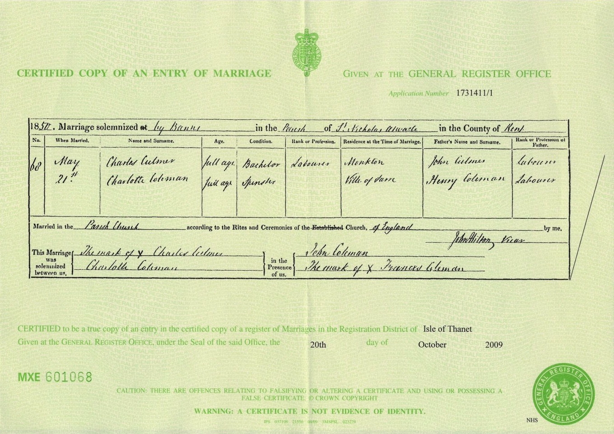
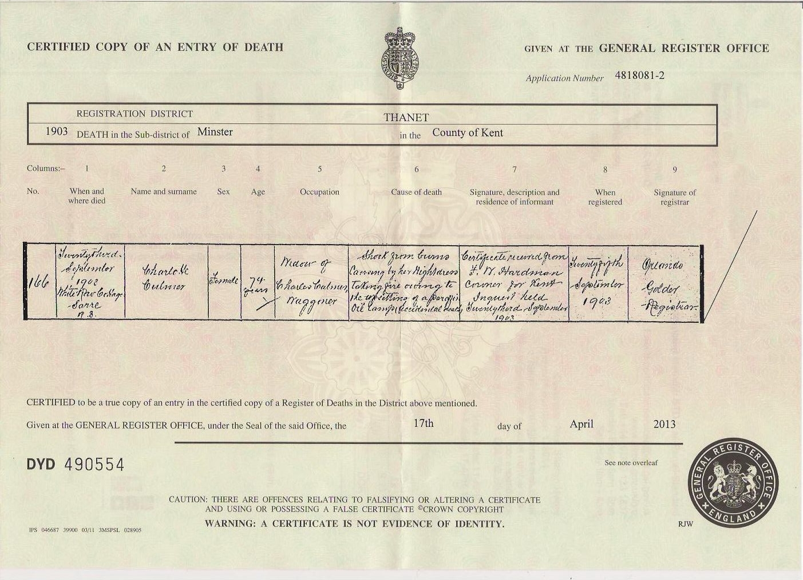

Charlotte Culmer (née Coleman) c1829 - 1903
[ Home ] | [ Calendar ] | [ Surnames Index ] | [ Census Index ] | [ Family History ]A pauper and the child of Henry Coleman (a gardener and domestic) and Elizabeth Adams, Charlotte Coleman, the great-great-grandmother of Nigel Horne, was born in Sarre, Kent, England c. 18291,2,3,4,5,6,7,8, was baptized there on May 22, 1829 and married Charles Culmer (a farm waggoner with whom she had 9 children: Ann, Henry, Charles, Elizabeth, Emma, John, George, Jane and Frances, along with 5 surviving children) in St Nicholas-at-Wade, Kent, England on May 21, 18509 (St. Nicholas At Wade, Kent, England).
During her life, she was living at her birthplace on Jun 6, 184114; at Row, Monkton, Kent on Mar 30, 185113; on Monkton Street, Monkton, Kent on Apr 7, 18613; at The Street in St Nicholas-at-Wade on Apr 2, 187110 and on Apr 3, 18815; and at Street in Sarre on Apr 5, 189111 following the death of her husband on Aug 17, 1881 and on Mar 31, 190112.
She died on Sep 23, 1903 in Sarre8 (shock from burns).
Parents
- Henry was born c. 1801
- Elizabeth was born in 1799
Children
- Henry was born c. Nov 1851
- Charles was born on Dec 5, 1852
- Emma was born on Nov 15, 1860
- George was born c. May 1863
Citations
- 1841 England Census Online publication - Provo, UT, USA: The Generations Network, Inc., 2006.Original data - Census Returns of England and Wales, 1841. Kew, Surrey, England: The National Archives of the UK (TNA): Public Record Office (PRO), 1841. Data imaged from the National
- 1851 England Census Online publication - Provo, UT, USA: The Generations Network, Inc., 2005.Original data - Census Returns of England and Wales, 1851. Kew, Surrey, England: The National Archives of the UK (TNA): Public Record Office (PRO), 1851. Data imaged from the National
- 1861 England Census Online publication - Provo, UT, USA: The Generations Network, Inc., 2005.Original data - Census Returns of England and Wales, 1861. Kew, Surrey, England: The National Archives of the UK (TNA): Public Record Office (PRO), 1861. Data imaged from the National
- 1871 England Census Online publication - Provo, UT, USA: The Generations Network, Inc., 2004.Original data - Census Returns of England and Wales, 1871. Kew, Surrey, England: The National Archives of the UK (TNA): Public Record Office (PRO), 1871. Data imaged from the National
- 1881 England Census Online publication - Provo, UT, USA: The Generations Network, Inc., 2004. 1881 British Isles Census Index provided by The Church of Jesus Christ of Latter-day Saints © Copyright 1999 Intellectual Reserve, Inc. All rights reserved. All use is subject to the
- 1891 England Census Online publication - Provo, UT, USA: The Generations Network, Inc., 2005.Original data - Census Returns of England and Wales, 1891. Kew, Surrey, England: The National Archives of the UK (TNA): Public Record Office (PRO), 1891. Data imaged from The National
- 1901 England Census Online publication - Provo, UT, USA: The Generations Network, Inc., 2005.Original data - Census Returns of England and Wales, 1901. Kew, Surrey, England: The National Archives of the UK (TNA): Public Record Office (PRO), 1901. Data imaged from the National
- England & Wales, FreeBMD Death Index: 1837-1915 Online publication - Provo, UT, USA: The Generations Network, Inc., 2006.Original data - General Register Office. England and Wales Civil Registration Indexes. London, England: General Register Office. © Crown copyright. Published by permission of the Cont
- England & Wales, FreeBMD Marriage Index: 1837-1915 Online publication - Provo, UT, USA: The Generations Network, Inc., 2006.Original data - General Register Office. England and Wales Civil Registration Indexes. London, England: General Register Office. © Crown copyright. Published by permission of the Cont
- 1871 England, Wales & Scotland Census - Findmypast (was age 42 and the wife of the head of the household)
- 1891 England, Wales & Scotland Census - Findmypast (was age 62 and the head of the household)
- 1901 England, Wales & Scotland Census - Findmypast (was age 71 and the head of the household)
- 1851 England, Wales & Scotland Census - Findmypast (was age 22 and the wife of the head of the household)
- 1841 England, Wales & Scotland Census - Findmypast (was age 12)
Media
Charles Culmer - Charlotte Coleman - marriage certificate

Charlotte Coleman - death certificate

Canterbury Marriages - GBPRS/CANT/M/97245491/2
England & Wales marriages 1837-2008 - BMD/M/1850/2/AJ/000383/005
England & Wales deaths 1837-2007 - BMD/D/1903/3/AZ/000073/082
1871 England, Wales & Scotland Census - GBC/1871/0014272133
1891 England, Wales & Scotland Census - GBC/1891/0005854406
1901 England, Wales & Scotland Census - GBC/1901/0005517711
1841 England, Wales & Scotland Census - GBC/1841/0013978870
Family Tree

Generated by ged2site. Last updated on Jun 11, 2024